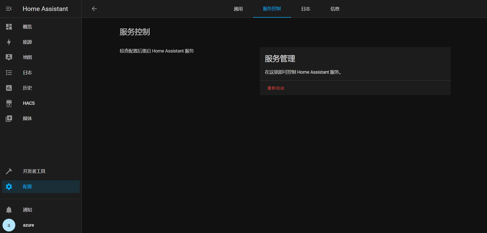
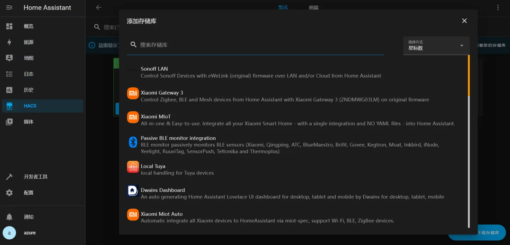
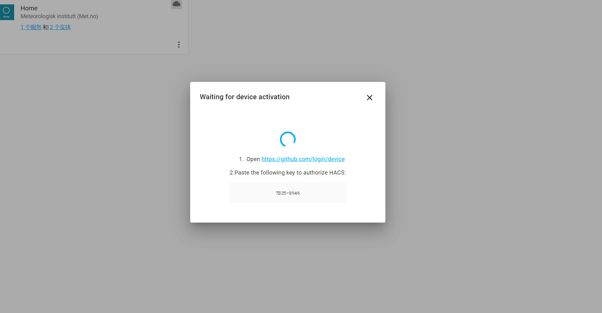
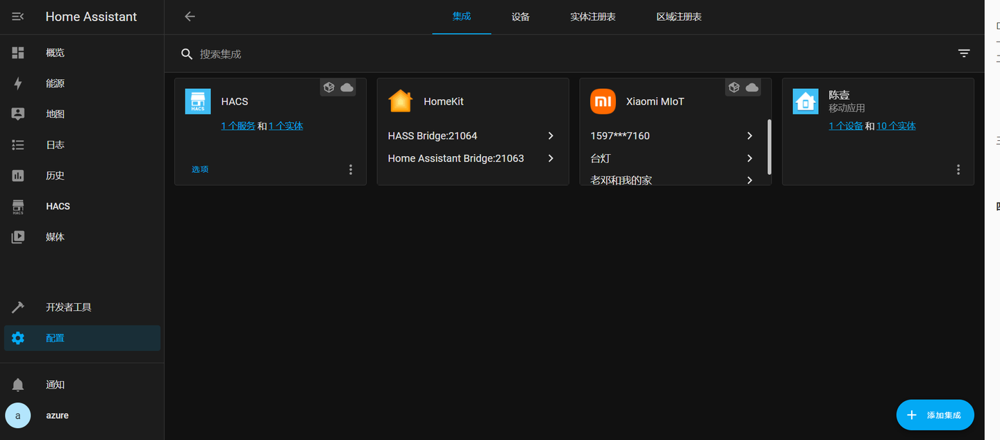
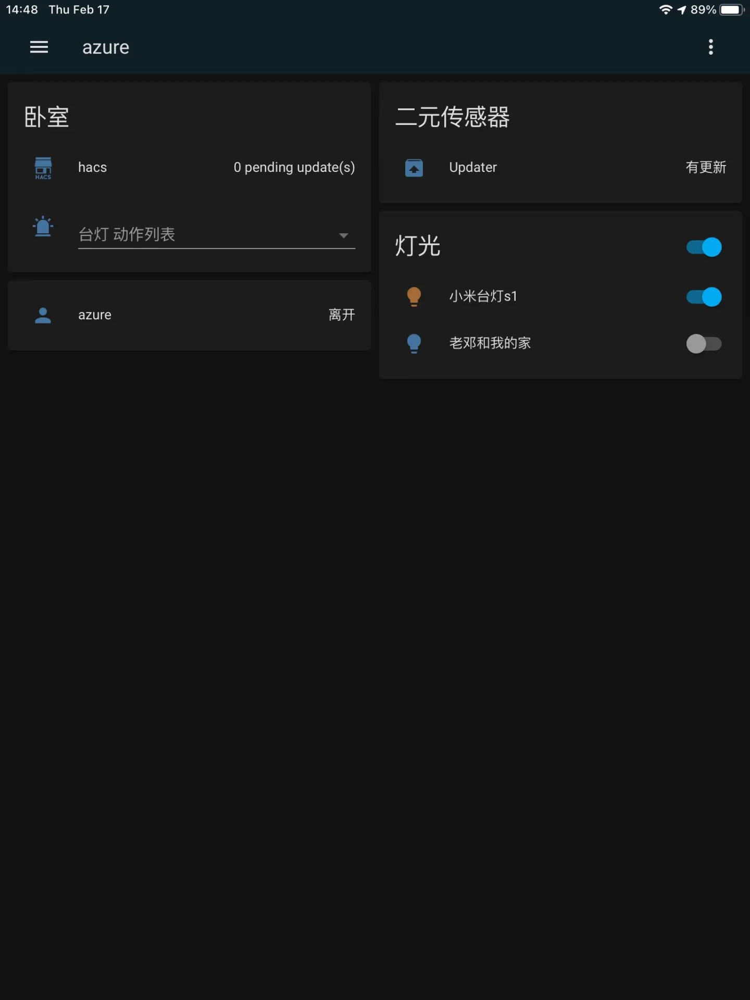

HomeAssistant 安装
1 | docker run -it -d -p 3000:3000 -e EDW_USERNAME='admin' -e EDW_PASSWORD='admin' -v /var/run/docker.sock:/var/run/docker.sock qfdk/easydockerweb |
官方安装
https://www.home-assistant.io/installation/linux
#拉取hass的最新版镜像(注意：根据自己需求选择对应版本，并不是越新越好)
docker pull homeassistant/home-assistant:latest
#创建容器并运行
docker run -d –name=”hass” -v /home/homeassistant/config:/config -p 8123:8123 homeassistant/home-assistant:latest
解释:
-d：表示在后台运行
–name：给容器设置一个名称，用于识别，这里起名叫做hass
-v：配置目录映射（容器内的指定目录直接映射到本地主机的对应目录，比如上面那句命令，意思就是将容器里hass的 config 目录映射到 /home/hass/config 这个目录里面）
-p：映射端口（将容器内的8123端口直接映射到物理机的8123端口，这样服务器的IP地址+端口号即可访问hass页面）
最后就是运行刚才下载的容器镜像了，对于其他的版本了，注意要加上tag,避免自动下载最新版本。
1、安装HACS
安装HACS(Home Assistant Community Store,一个商店，集成丰富，依托于GitHub。
1 | #进入hass目录,安装hacs |
重启hass


经过与GitHub授权访问后，你可以将HACS添加进组件中了。


2、安装xioami_miot
- 通过hacs自动安装
打开 Home Assistant 的 HACS 页面。
搜索xiaomi_miot
点击集成。
点击右下角的浏览并添加存储库。
在新打开的页面中找到Xiaomi MIoT，安装即可。
- 手动安装
1.下载插件 zip 压缩包
贴上： https://github.com/ha0y/xiaomi_miot_raw/archive/refs/heads/master.zip
2.依次打开压缩包中的xiaomi_miot_raw-master/custom_components文件夹。
3.将该文件夹中的xiaomi_miot_raw文件夹拷贝至自己 hass 安装目录的custom_components文件夹,即替换掉原来的xiaomi_miot_raw
4.重新启动 Home Assistant。
3、集成小米智能设备
配置界面->添加集成->搜索xiaomi_miot->登录小米账号
自动识别该账号下的智能设备
添加

现在，我们可以通过部署在云服务器上的Hass，来操控我们的小米智能家居设备了，所以索性买了灯泡和台灯试了试

苹果用户的话，也可以直接下载Hass
当然，直接集成homekit,也可以同步小米的设备，能更方便的操作。大家可以试试
4、docker常用命令
附上docker常用的一些操作指令:
docker images 查看镜像
docker rmi 镜像id 删除镜像
docker ps-a 查看已有容器
docker start 容器id 运行容器
docke ps 显示所有运行中的容器
docker ps -a 显示所有容器
docker rm 容器 ID 或名称 删除容器
docker start 容器 ID 或名称 启动指定容器
docker stop 容器 ID 或名称 停止指定容器
docker restart 容器 ID 或名称 重启指定容器